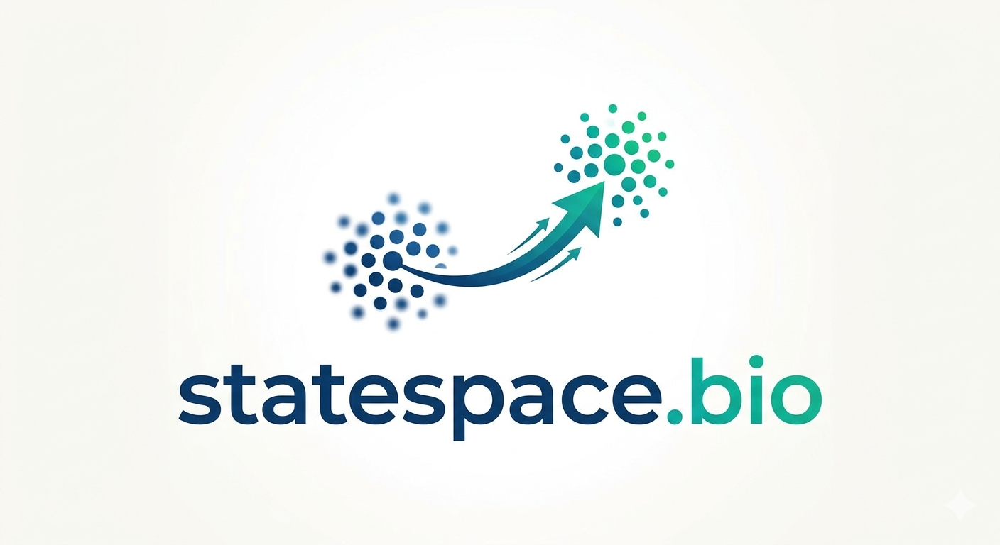

We build computational frameworks that learn the geometry and dynamics of biological state space to identify the minimal interventions required for moving the system from one state to another.
Explore the IdeaStable biological states correspond to attractors in a high-dimensional space. We rank candidate control variables by their geometric leverage on transitions between these attractors.
Infers control variables from the geometry and dynamics of state space alone, without requiring pre-existing regulatory networks.
Defines "minimal intervention" as the perturbation that maximally redirects trajectory direction per unit of feature change.
Explicitly distinguishes between geometric candidates and causal drivers, acting as a high-precision hypothesis generation engine.
If biological states are navigable, then cellular and organismal states are theoretically redirectable toward desirable states. Our core mission is to determine if this is possible and if so, solve for the minimal set of variables needed to move a cell or organism from state A to state B.
Proof of Concept
The first study underway is the State Navigator project. We are currently using high quality single-cell transcriptomic data sets from Pancreatic Endocrinogenesis & Dentate Gyrus Neurogenesis to establish proof of concept. This project works in continuous gene expression space where cells move along trajectories between attractor states, and we are asking: what are the minimal perturbations that redirect those trajectories?
The second study underway is the anti-microbial resistance project (AMR). The AMR project works in a discrete/mixed genomic feature space where bacterial lineages occupy positions defined by their gene content, SNPs, and mobile elements. Resistant and susceptible phenotypes are stable phenotypic attractors in this genomic landscape. We'll use genetic programming to learn the geometric boundaries between resistance basins. The interpretable rules it produces will be compact descriptions of the minimal genomic features that define those boundaries.